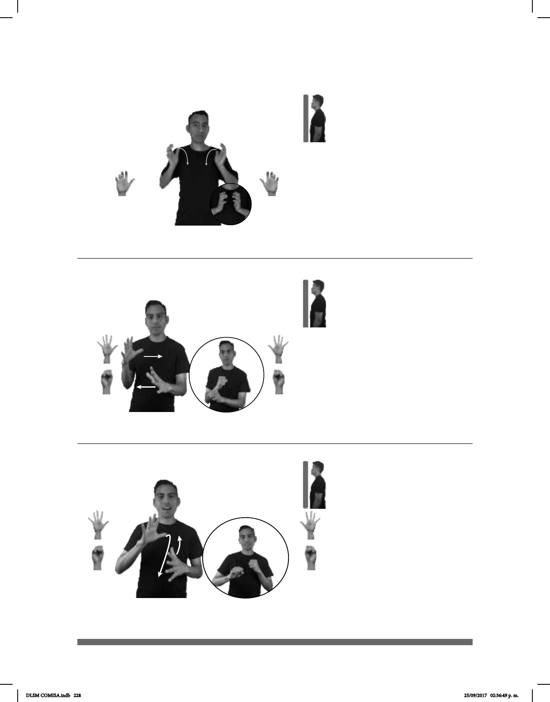

228
Seña: SS
5.11
Palmas hacia el centro.
De los hombros al pecho,
de los lados al centro.
Los brazos se mueven
formando un arco.
1. sust. m. Prenda de
vestir que cubre el tórax, desde el
cuello
hasta la cadera, generalmente con
solapas, mangas, bolsas y
abotonado al frente. 2. sust. m. Con-
junto de vestimenta formal compuesto
por al menos una parte superior y una
inferior.
(5-G 106) Saco
1
/ Traje
2
__muy
SACO CARO
Los sacos son muy caros.
Seña: SS
Seña que pasa de 5.1 a
S.1
Palmas oblicuas hacia el
centro y hacia abajo.
A la altura del pecho.
Las manos cruzan hacia el
centro y llegan a un punto cercano.
1. sust. f. conjunto de
movimientos manuales que tienen un
sust. f. Nombre con el que se llama
irónica o familiarmente a una persona, por
lo general hace referencia a algún defecto,
cualidad o característica que lo distingue.
(5-G 107)
Seña
1
2
(A)
(5-G 108) Seña
1
2
(B)
_______o.i.p._
pro-TÚ SEÑA
¿Cuál es tu seña personal?
Seña: SB
MD y MB seña que pasa
de 5.1 a S.1
MD y MB palmas oblicuas
hacia el centro y hacia abajo.
MD y MB a la altura del pecho.
La MD y la MB se
mueven formando un círculo hacia atrás
alternadamente mientras los dedos se cie-
rran contra la palma.
Acción de masticar.
1. sust. f. Conjunto de
movimientos manuales que tienen un
sust. f. Seña que se le asigna a una persona
para distinguirla de las demás.
______o.i.p._
pro-TÚ SEÑA
¿Cuál es tu seña personal?
DLSM COMISA.indb 228 25/09/2017 02:36:49 p. m.